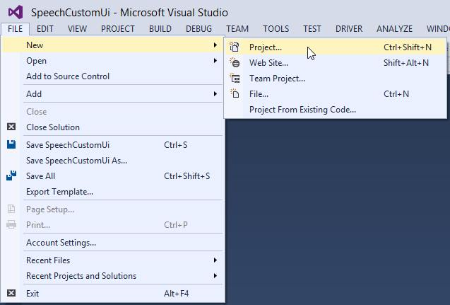
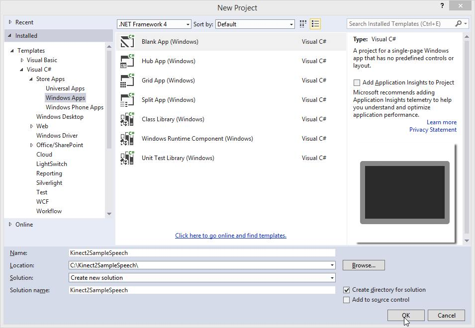
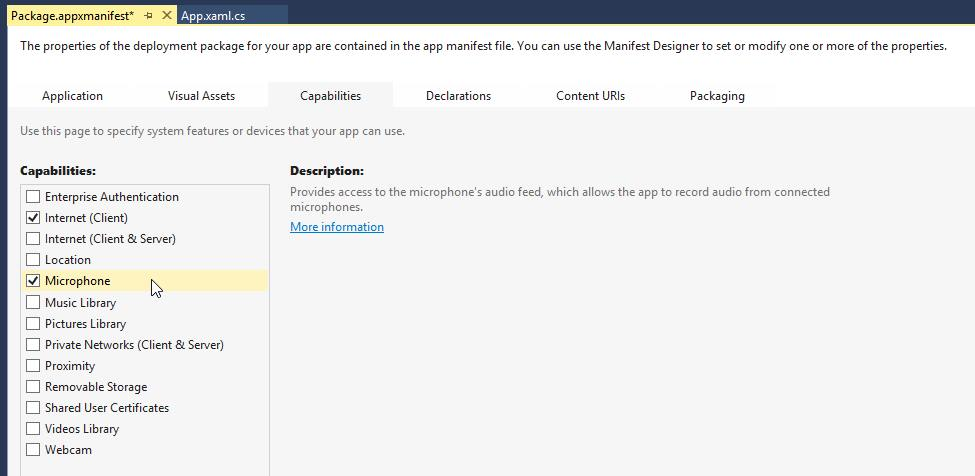
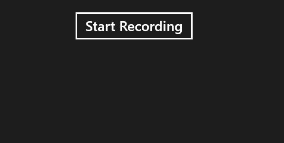

The Hands On Labs to complete a sample application for Windows 8.1 and the Kinect 2 for Windows
Estimated Time to Complete: 40min
This lab is part of a series of hands on labs which teach you how to use almost every available feature of the Kinect 2. This is the thirteenth lab in the series, and it teaches you how to use the Kinect 2 and the Bing.Speech API to recognize speech as input for a new Windows 8.1 store application.
The Bing Speech API is a cloud based speech recognition solution. The cloud it works with is a part of Microsoft Azure and so it requires Azure account information to work correctly. There is a charge for applications which utilise a lot of speach transactions and this is calculated and advertised on the Windows Azure Data Marketplace. For testing and initial development, it is fine to set up an account with a free 500,000 queries in the Azure Marketplace.
The Bing Speech API Speech Recognition works by streaming raw audio from a microphone (in this case, the Kinect 2 microphone array), and sending that raw audio stream to the cloud. The cloud service processes the audio stream, and whole words and sentences are returned to the application (in text form) with a measure of confidence. Many languages are supported but for this lab we will use American English (en-US) (Please keep in mind that an American accent does make a difference to the translation accuracy).
This lab will create a project from scratch which uses Bing Speech to retrieve text from Speech, using the Kinect 2 microphone.
This lab will explain the following:
This lab and all subsequent labs in this series are built using C# and assume you have a fundamental knowledge of the C# language. The screenshots here are from Visual Studio Community Edition .
Download the Bing Speech Recognition Control from the Visual Studio Gallery online.
https://visualstudiogallery.msdn.microsoft.com/521cf616-a9a8-4d99-b5d9-92b539d9df82
Run the Bing Speech Recognition Control For Windows 8.1.visx installer to install this extension SDK. If Visual Studio 2013 is open, close it.
Create a new project:
Open Visual Studio 2013 and create a new project by selecting FILE > New > Project...

Create a C# Windows Store App from a Blank Template and name it Kinect2SampleSpeech. It's not related to or dependent on the previous labs so you can put it in any directory you like.

Click OK.
Add a reference to the Bing.Speech Extension:
Bing.Speech does not work with the AnyCPU architecture, you must select either x86 or x64 (in this lab we will use x64):
Change the capabilities of the app so that it can access the microphone in the Kinect:
Open the Package.appxmanifest from the Solution Explorer.
Select the Capabilities tab and check the Microphone and Internet (Client).

Save the changes (Ctrl + S).
Finally, there is something special you must do to the the Package.appxmanifest to use the Bing Speech reference. There is some interop within the Bing.Speech library, and it needs to have some classes registered manually:
<Capabilities>
<Capability Name="internetClient" />
<DeviceCapability Name="microphone" />
</Capabilities>
<Extensions>
<Extension Category="windows.activatableClass.inProcessServer">
<InProcessServer>
<Path>Microsoft.Speech.VoiceService.MSSRAudio.dll</Path>
<ActivatableClass ActivatableClassId=
"Microsoft.Speech.VoiceService.MSSRAudio.Encoder"
ThreadingModel="both" />
</InProcessServer>
</Extension>
<Extension Category="windows.activatableClass.proxyStub">
<ProxyStub ClassId="5807FC3A-A0AB-48B4-BBA1-BA00BE56C3BD">
<Path>Microsoft.Speech.VoiceService.MSSRAudio.dll</Path>
<Interface Name="IEncodingSettings"
InterfaceId="C97C75EE-A76A-480E-9817-D57D3655231E" />
</ProxyStub>
</Extension>
<Extension Category="windows.activatableClass.proxyStub">
<ProxyStub ClassId="F1D258E4-9D97-4BA4-AEEA-50A8B74049DF">
<Path>Microsoft.Speech.VoiceService.Audio.dll</Path>
<Interface Name="ISpeechVolumeEvent" InterfaceId=
"946379E8-A397-46B6-B9C4-FBB253EFF6AE" />
<Interface Name="ISpeechStatusEvent" InterfaceId=
"FB0767C6-7FAA-4E5E-AC95-A3C0C4D72720" />
</ProxyStub>
</Extension>
</Extensions>
</Package>
Build and Run the application to make sure the reference was added and doesn't conflict with any others.
Before you can use the API through the SpeechRecognizer, you need Azure credentials to use for the application. The following instructions are from the msdn page : https://msdn.microsoft.com/en-us/library/dn434606.aspx
To subscribe to the Bing Speech Recognition Control:
To register your application with the Azure Data Market:
For the rest of this Lab we will use placeholder ID and Secret data, which you should replace with the Client ID and Client Secret you just created.
You now get to write some code! You're going to create an app with one button to start a recording, then it will give you instant feedback on its assumptions about what you said, until it's finished recognising your sentence.
Add a button and some text fields in the xaml of the MainPage to control and respond to the Speech Recognizer. Open the MainPage.xaml file and add the following new code:
<Page
x:Class="Kinect2SampleSpeech.MainPage"
xmlns="http://schemas.microsoft.com/winfx/2006/xaml/presentation"
xmlns:x="http://schemas.microsoft.com/winfx/2006/xaml"
xmlns:local="using:Kinect2SampleSpeech"
xmlns:d="http://schemas.microsoft.com/expression/blend/2008"
xmlns:mc="http://schemas.openxmlformats.org/markup-compatibility/2006"
mc:Ignorable="d">
<Page.Resources>
<Style TargetType="TextBlock">
<Setter Property="FontSize" Value="20"/>
<Setter Property="Margin" Value="15"/>
</Style>
</Page.Resources>
<Grid Background=
"{ThemeResource ApplicationPageBackgroundThemeBrush}">
<StackPanel Orientation="Vertical"
HorizontalAlignment="Center">
<Button x:Name="StartRecButton"
Margin="20"
Click="StartRecButton_Click">
Start Recording
</Button>
<TextBlock x:Name="CaptureStateTextBlock"/>
<TextBlock x:Name="VolumeTextBlock" />
<TextBlock x:Name="IntermediateResultsTextBlock"/>
<TextBlock x:Name="ConfidenceTextBlock"/>
<TextBlock x:Name="FinalResultTextBlock"/>
<TextBlock x:Name="AlternatesTextBlock"/>
</StackPanel>
</Grid>
</Page>
Open the code behind MainPage.xaml.cs file, and add a new MainPage.Loaded handler method, in which you can initialize the SpeechRecognizer, which you can keep as a class level variable:
using Bing.Speech;namespace Kinect2SampleSpeech { public sealed partial class MainPage : Page {private SpeechRecognizer speechRec;public MainPage() { this.InitializeComponent();this.Loaded += MainPage_Loaded;}void MainPage_Loaded(object sender, RoutedEventArgs e){// Apply credentials from the// Windows Azure Data Marketplace.var credentials = new SpeechAuthorizationParameters();credentials.ClientId = "YOUR_CLIENT_ID";credentials.ClientSecret = "YOUR_CLIENT_SECRET";// Initialize the speech recognizer.speechRec = new SpeechRecognizer("en-US", credentials);}
Sign up for events from the SpeechRecognizer and create handler methods for these events:
void MainPage_Loaded(object sender, RoutedEventArgs e)
{
// Apply credentials from the Windows Azure Data Marketplace.
var credentials = new SpeechAuthorizationParameters();
credentials.ClientId = "YOUR CLIENT ID";
credentials.ClientSecret = "YOUR CLIENT SECRET";
// Initialize the speech recognizer.
speechRec = new SpeechRecognizer("en-US", credentials);
// Add speech recognition event handlers.
speechRec.AudioCaptureStateChanged +=
speechRec_AudioCaptureStateChanged;
speechRec.AudioLevelChanged += speechRec_AudioLevelChanged;
speechRec.RecognizerResultReceived +=
speechRec_RecognizerResultReceived;
}
void speechRec_AudioCaptureStateChanged(SpeechRecognizer sender,
SpeechRecognitionAudioCaptureStateChangedEventArgs args)
{
CaptureStateTextBlock.Text = "Capture State: "
+ Enum.GetName(typeof(SpeechRecognizerAudioCaptureState),
args.State);
}
void speechRec_AudioLevelChanged(SpeechRecognizer sender,
SpeechRecognitionAudioLevelChangedEventArgs args)
{
VolumeTextBlock.Text = "Volume: "+ args.AudioLevel;
}
void speechRec_RecognizerResultReceived(SpeechRecognizer sender,
SpeechRecognitionResultReceivedEventArgs args)
{
if (args.Text == null) return;
IntermediateResultsTextBlock.Text = "IntermediateResults: "
+ args.Text;
if (args.Text.ToLower().Contains("cancel"))
speechRec.RequestCancelOperation();
else if (args.Text.ToLower().Contains("stop"))
speechRec.StopListeningAndProcessAudio();
}
This code should be self explanatory; the stop and cancellation, simply cancels the web request if the user says cancel, or stops and process the request if the user says stop.
Set up the StartRecButton_Click event to start the recording and wait for it so finish:
This must be an async method as it's main function is to await the result of a call to speechRec.RecognizeSpeechAsync().
After getting the result, you then display it and if there are any sentences or words which sound similar, they are available from the GetAlternatives() call.
Exceptions can be thrown from this method because it's a web request so if the user loses internet connection before or during the listening period, it will fail. Keep this in mind when designing your speech experience.
Copy the following StartRecButton_Click async method into the MainPage.xaml.cs code file:
async private void StartRecButton_Click(object sender, RoutedEventArgs e){// Prevent concurrent calls to an async methodStartRecButton.IsEnabled = false;// Reset all the textVolumeTextBlock.Text = "";CaptureStateTextBlock.Text = "";IntermediateResultsTextBlock.Text = "";ConfidenceTextBlock.Text = "";FinalResultTextBlock.Text = "";AlternatesTextBlock.Text = "";// Use a try block because RecognizeSpeechToTextAsync depends// on a web service which can throw exceptions.try{// Start speech recognition and await the result// As this is occuring, the RecognizerResultReceived will// fire as the user is speaking.var result = await speechRec.RecognizeSpeechToTextAsync();// Show the TextConfidence.ConfidenceTextBlock.Text = "Confidence: " +Enum.GetName(typeof(SpeechRecognitionConfidence),result.TextConfidence);// Display the text.if (result.Text != null){FinalResultTextBlock.Text = result.Text;}// Fill a string with the alternate results.var alternates = result.GetAlternates(5);if (alternates.Count > 1){string s = "";for (int i = 1; i < alternates.Count; i++){s += "\n" + alternates[i].Text ;}AlternatesTextBlock.Text = "Alternates: " + s;}}catch (Exception ex){// If there's an exception,// show it instead of the Final Result.if (ex.GetType() != typeof(OperationCanceledException)){FinalResultTextBlock.Text = string.Format("{0}: {1}",ex.GetType().ToString(), ex.Message);}}// Finished recording, allow recording again.StartRecButton.IsEnabled = true;}
Build and Run the application. You should see a big Start Recording button at the top:

When you press it, the app will ask for microphone permission, then once you've allowed it, the state will change to Listening and if you say something at the Kinect 2, it will attempt to interpret. When you've finished speaking, it will display a final result:
If you are having issues with the speech recognition, try boosting your microphone gain in Windows for the Kinect 2 device:
Using the Kinect as a microphone for Bing Speech is exactly the same as you would use any other attached microphone. In fact the Kinect API is not even referenced in this solution..
You should be aware that the user must have an uninterrupted internet connection while processing speech, and you need a developer licence to use the Bing.Speech cloud recognition (You get 500,000 processes for free, and it's very cheap after that).
It should be noted that while these tutorials were being created with Visual Studio 2013 Update 4, there were breaking issues attempting to use the Bing Speech API at the same time as the Microsoft.Kinect.Xaml.Controls API and the Microsoft.Kinect.Face API. Using Bing.Speech resulted in some classes no longer being registered and throwing WinRT Class Not Registered exceptions upon initialization. We are investigating this issue and if you have any additional info about it, then we would like to hear it!
Please give feedback with the following link.
The next lab will begin from the code completed in this lab code.